- The system has detected a sign
- The vehicle speed is within a certain range
- The displayed maximum speed limit is within a certain range (Only when the maximum speed limit is available)
- The distance from the vehicle to a road sign is within a certain range
| Last Modified: 10-07-2025 | 6.11:8.1.0 | Doc ID: NM100000002GLT7 |
| Model Year Start: 2024 | Model: Tacoma | Prod Date Range: [12/2023 - ] |
| Title: ADVANCED DRIVER ASSISTANCE SYSTEM: ROAD SIGN ASSIST SYSTEM: ROAD SIGN ASSIST CONTROL; 2024 - 2026 MY Tacoma Tacoma HV [12/2023 - ] | ||
ROAD SIGN ASSIST CONTROL
FUNCTION
(a) The RSA system recognizes the following traffic signals using the forward recognition camera.
|
Sign Type |
Example of Recognizable Sign |
Operation Pattern* |
|---|---|---|
| *: Refer to the operation patterns. | ||
|
Speed limit |
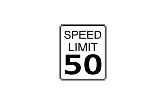 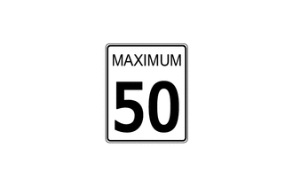 |
Pattern A |
|
Stop |
Pattern B |
|
|
No Turn / No U-turn |
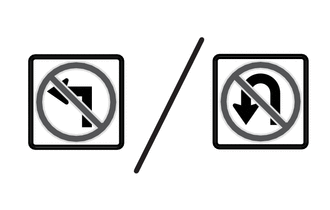 |
Pattern C |
|
No Turn On Red |
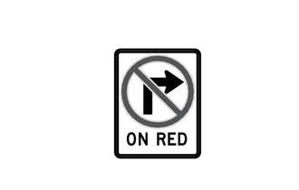 | |
|
Pedestrian Crossing |
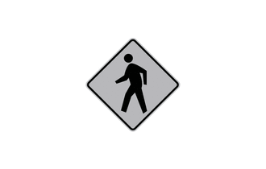 | |
|
Road Works |
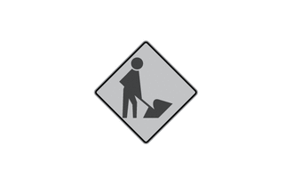 | |
|
Yield |
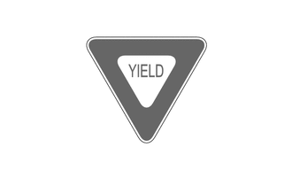 | |
(b) Operating Conditions
(1) The main conditions to display road signs are as follows. (Specific conditions will vary depending on the type of road sign)
|
|
|
*1 |
Forward Recognition Camera |
- |
- |
|
*a |
Multi-information Display |
*b |
Traffic Sign Display |
|
*c |
Traffic Sign |
*d |
The illustrations shown is example only. |
(2) In the following situations, display of the road signs are stopped such as when the system determines a road sign is invalid. (Specific conditions will vary depending on the type of road sign). After recognition of the sign on the road by forward recognition camera, the sign is displayed on the multi-information display.
|
HINT:
When a "Speed Limit Ends" sign is detected, it will be momentary displayed when passing the road sign.
(3) Operation Pattern A
- After recognition of the sign on the road by forward recognition camera, the sign is displayed on the multi-information display.
- While a sign is displayed on the multi-information display, if no sign has been recognized within a specified distance, display of the current sign is turned off. 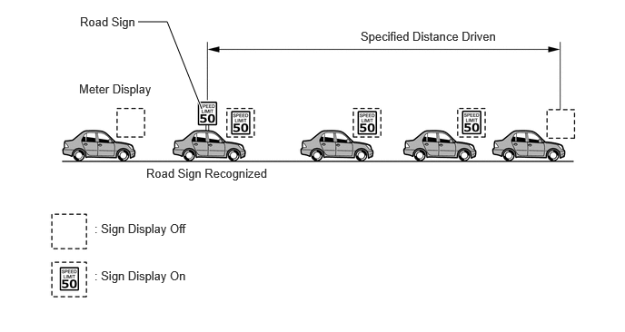
(4) Operation Pattern B
- After recognition of the sign on the road by forward recognition camera, the sign is displayed on the multi-information display.
- While a sign is displayed on the multi-information display, if the vehicle passes the sign, display of the current sign is turned off. 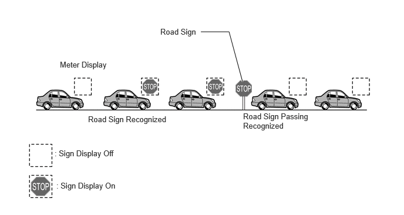
(5) Operation Pattern C
- After recognition of the no turn or no u-turn sign on the road by forward recognition camera, the sign is displayed on the multi-information display.
- While a sign is displayed on the multi-information display, if no sign has been recognized within a specified distance, display of the current sign is turned off. 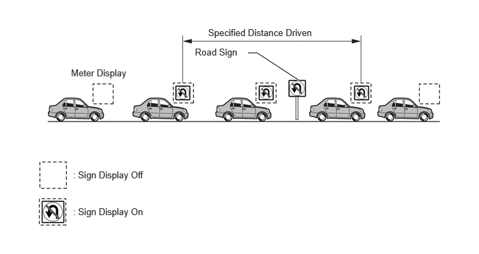
(6) Display Contents
- Various road signs can be displayed. Depending on
the specifications of the vehicle, the number of
displayed road signs may be limited. 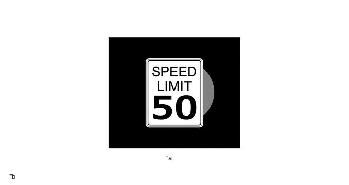
*a
Multiple Road Sign Recognized
*b
The illustration shown is an example only. The illustration may differ from the actual vehicle screen.
- Road signs detected by the forward recognition camera are displayed on the headup display. (Models with headup display)
SYSTEM CONTROL
(a) Speed Limit Exceeded Notification
(1) Outline
- When the vehicle speed exceeds the speed warning threshold of the speed limit sign displayed, the sign display will be emphasized and a buzzer will sound.
(2) Operation timing
- An excessive speed notification will be displayed
when the following conditions are met.
*: The threshold can be adjusted to 1 of 3 levels through the customization function. - The maximum speed limit is displayed
- "Visual, visual and audible" is selected for the customize setting item "excess speed notification method"
- When the displayed maximum speed limit is higher than the excessive speed notification vehicle speed* value set using customize settings
(3) Operation Pattern
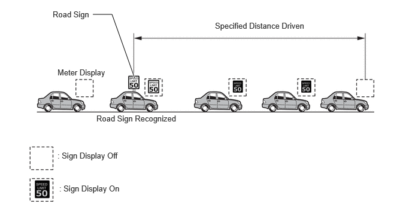(4) Notification Contents
- An icon will be emphasized as shown in the following illustration.
- If "visual, visual and audible" is selected for
the customize setting item "excess speed notification
method", the icon will be emphasized and the buzzer
will sound.
Notification Method
Display Example
Emphasized Display
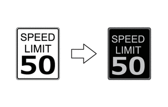
(b) Do Not Enter Notification
(1) Outline
- While a do not enter sign is recognized, if the system detects that the driver is driving on a road where entry is prohibited, the system flashed the displayed sign and sounds the meter buzzer.
(2) Operation Timing
- When any of the following conditions are met, a
no-entry notification will be displayed.
- 2 or more no-entry signs are detected
- Distance between detected no-entry signs is more than a certain amount
- The vehicle passes between no-entry signs
- "Visual, Visual and audible" is selected for the customize setting item "Other notifications method"
(3) Operation Pattern
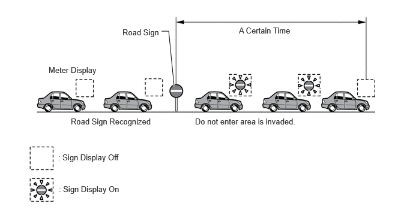(4) Notification Contents
- An icon will be flashing sign as shown in the following illustration.
- If "visual and audible" is selected for the
customize setting item "other notifications method",
the icon will be flashing sign and the buzzer will
sound.
Notification Method
Display Example
Flashing Display